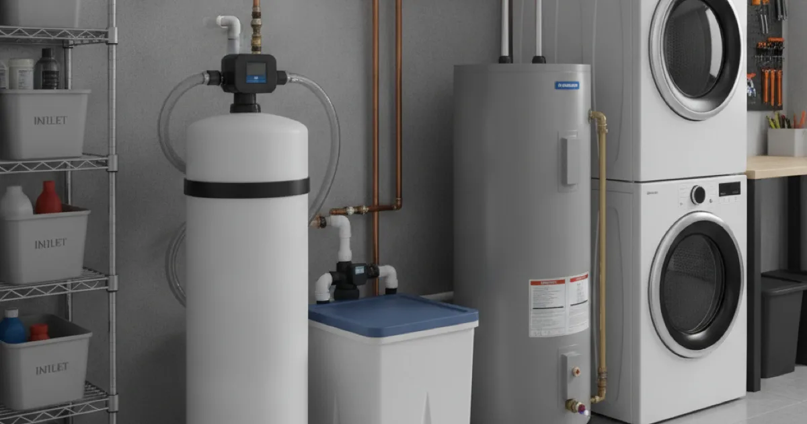
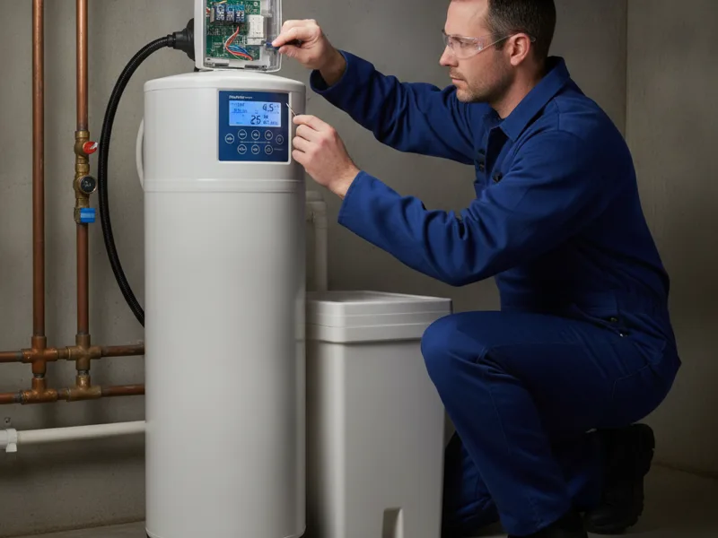

Water Softener Installation in Armonk, NY
Hard water builds up inside pipes and appliances long before you notice a real problem. We install a water softener sized correctly for your home's actual water use.
- Licensed & Insured
- Same-Day Service Available
- Upfront Pricing
- 15+ Years of Experience

How water softener installation works
We start by testing your water hardness so we know exactly what the softener needs to handle, rather than guessing based on a general area average. From there, we choose a unit sized to your household's water usage, install it at the point where water enters your home, and connect the resin tank, brine tank, and bypass valve so you can still access unsoftened water outside if you need it.
Once it's installed, we set the regeneration schedule based on your household's actual water use and walk you through basic maintenance, like adding salt, so the system keeps working the way it should.

What affects the cost
- Household water usage. Larger households need a higher-capacity unit to keep up between regeneration cycles.
- Water hardness level. Harder water requires more frequent regeneration or a larger resin tank.
- Installation location. Where your main water line enters the house affects how straightforward the install is.
- Softener type. Salt-based and salt-free systems differ in upfront cost and ongoing maintenance.
- Existing plumbing condition. Older supply lines sometimes need attention before a softener is added to the system.
Local factors in Armonk
Hard water spotting on faucets, shower glass, and glassware straight out of the dishwasher is one of the most common complaints we hear from Armonk-area homeowners, given the mineral content typical of the local water supply. Beyond the cosmetic annoyance, hard water gradually leaves mineral scale inside pipes and water-using appliances, which can shorten their working life and reduce efficiency over time.
A correctly sized softener addresses the mineral content directly, which is a different issue than water that tastes off or has a smell — that's more a question of a separate water filtration system rather than softening.
Browse our entire service menu for everything else we handle around water quality and general plumbing.
Getting the most from your softener
Keeping the brine tank filled with salt and checking it periodically keeps the regeneration cycle working correctly. Consumer Reports' appliance buying guidance is a useful reference for understanding how different softener types perform and what ongoing maintenance to expect from each.
Pairing your softener with routine plumbing maintenance visits helps us catch scale buildup in older pipes early, before hard water has a chance to do lasting damage to fixtures and appliances that were installed before the softener went in.
When to call a pro
Call us if you're noticing white or chalky buildup on faucets and showerheads, spots on dishes and glassware, or soap that doesn't lather well. These are all classic signs of hard water, and a properly sized softener can make a real difference in daily comfort as well as the long-term health of your plumbing.
See our water quality and plumbing services for more of what we handle for Armonk homes.
Frequently asked questions
How do I know if I have hard water?
Common signs include chalky white spots on fixtures and glassware, soap that doesn't lather easily, and a filmy feeling on your skin after showering. We can also test your water directly.
What size water softener do I need?
It depends on your household's water usage and how hard your water actually is. We test both before recommending a specific unit.
How long does water softener installation take?
Most residential installations are completed in a few hours, assuming the main water line is easily accessible.
Do I need to keep buying salt for my softener?
If you choose a salt-based system, yes, the brine tank needs periodic refilling. Salt-free alternatives handle minerals differently and don't require salt, though they work differently too. We can explain the tradeoffs.
Will a water softener fix bad-tasting water?
Not directly. Softening addresses mineral hardness, not taste or odor. If taste is your main concern, a filtration system is usually the better fit.
Can hard water actually damage my pipes?
Over time, yes. Mineral scale builds up inside pipes and appliances, gradually restricting flow and reducing efficiency, which is exactly what a softener is designed to prevent.